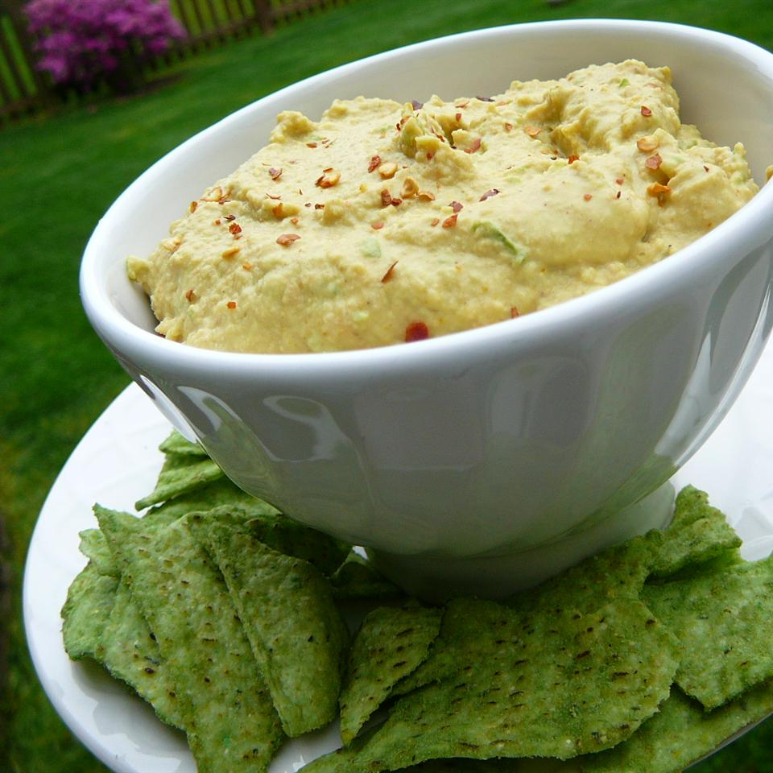

Jalapeno Hummus

Another Mexican Favourite
A spicy hummus to liven up the appetizer table!
Ingredients
- 1 cup garbanzo beans
- ⅓ cup canned jalapeno pepper slices, juice reserved
- 3 tablespoons tahini
- 3 cloves garlic, minced
- ½ teaspoon ground cumin
- ½ teaspoon curry powder
- crushed red pepper to taste
Steps
-
In a blender or food processor, mix the garbanzo beans, jalapeno peppers and reserved juice, tahini, garlic, and lemon juice.
-
Stir in onion, garlic, tomato,
lime juice, salt and pepper.
-
Season with cumin, curry powder, and crushed red pepper.
-
Blend until smooth.